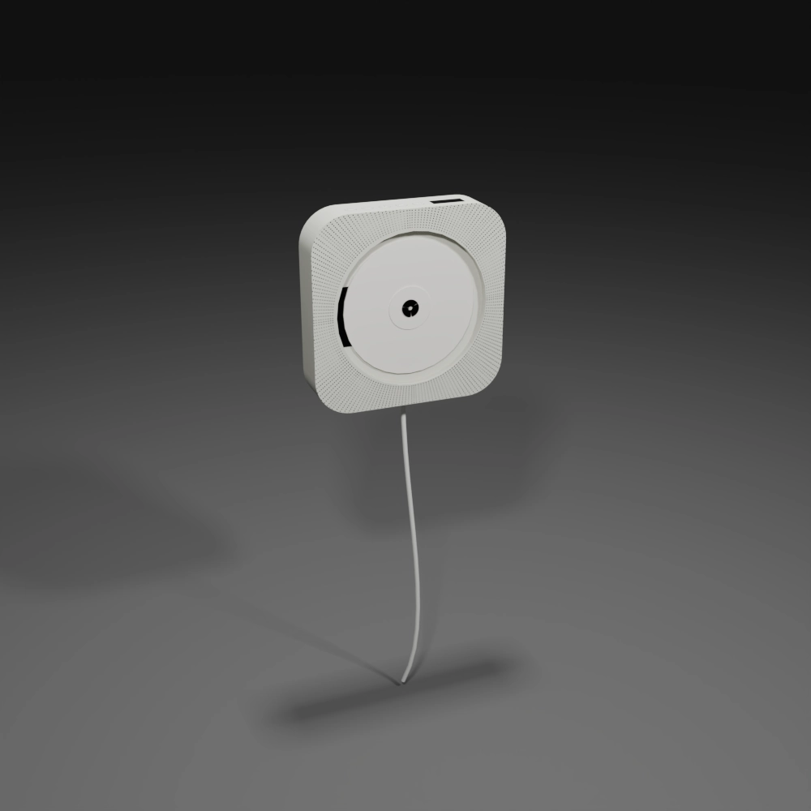

CDPlayer

CDプレーヤーは、高音質で安定した再生ができる音楽機器です。非圧縮のデジタル音源であるCDをクリアな音質で楽しめるのが最大の特徴で、 音飛びも少なく信頼性があります。操作はシンプルで直感的、誰でもすぐに使いこなせます。また、本格的なオーディオシステムと接続できるため、 こだわりの音環境を作ることも可能です。さらに、CDはジャケットやブックレットを含めた所有の喜びがあり、コレクション性にも優れています。
無印良品のCDプレーヤーは、シンプルで美しいデザインと壁掛け可能な省スペース設計が魅力です。 スピーカーとラジオを内蔵し、引き紐で操作する直感的な使い方も特徴。音質よりも「暮らしに自然に音楽を溶け込ませる」 ことを重視した一台で、生活空間を心地よく彩りたい人に最適です。